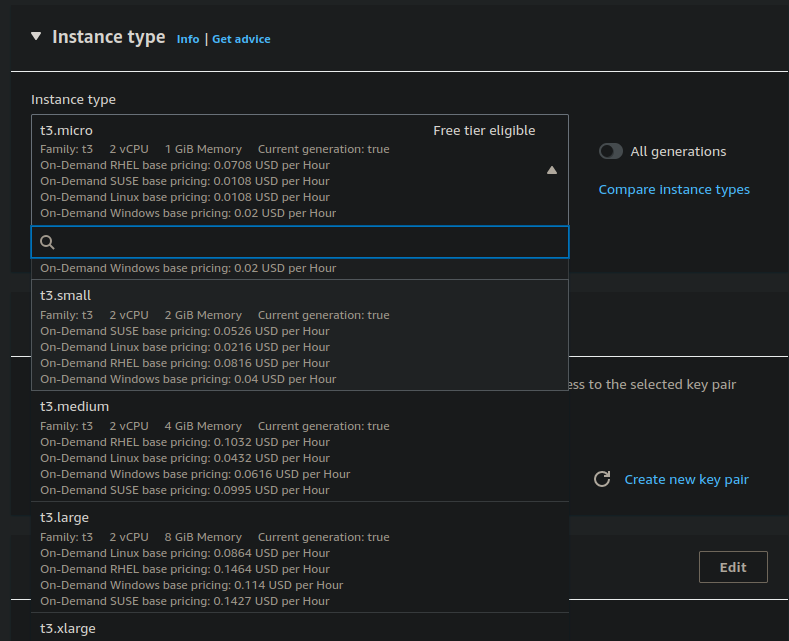
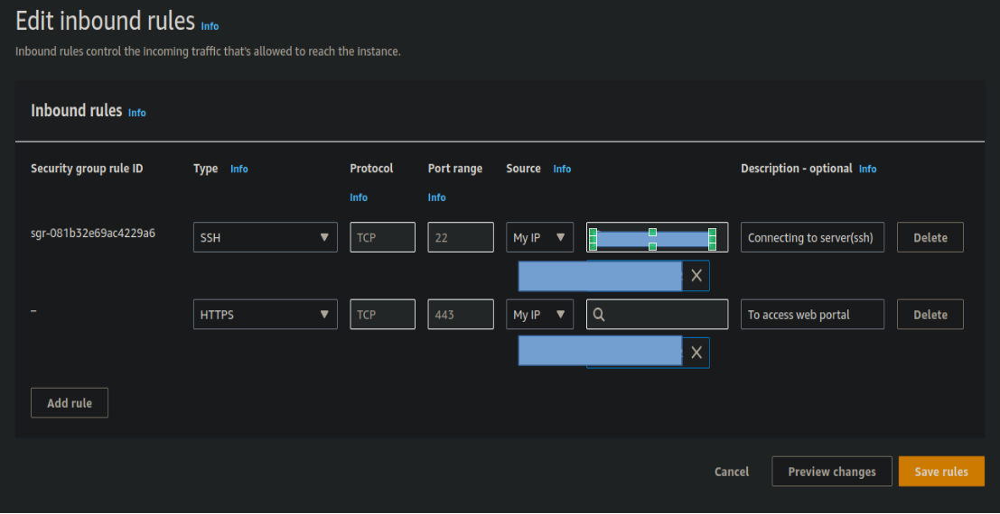
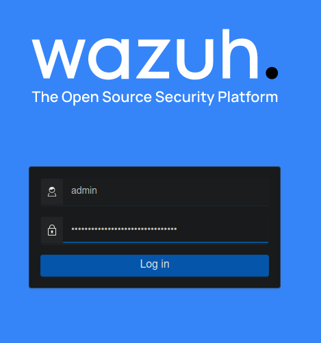
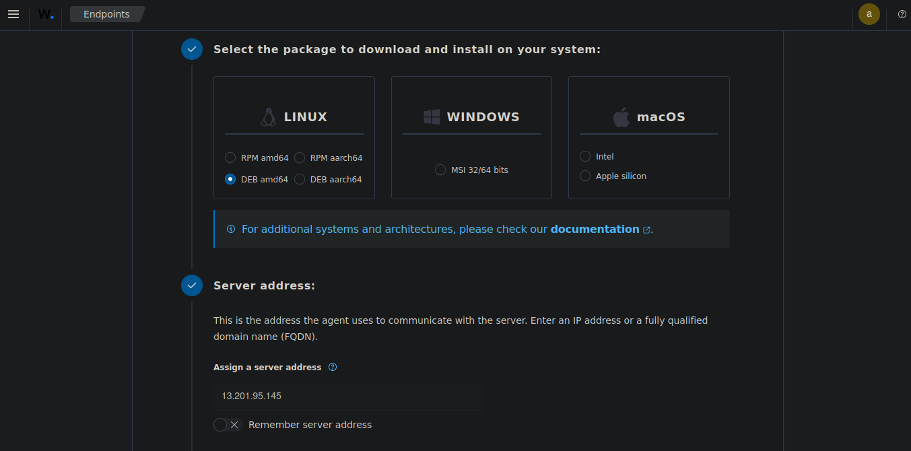
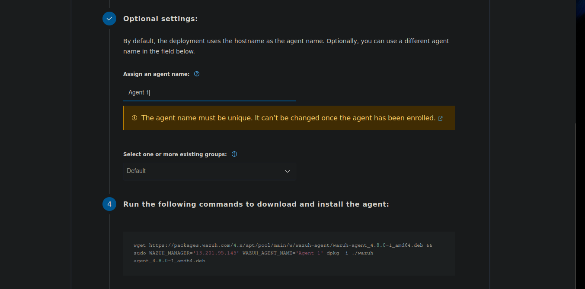
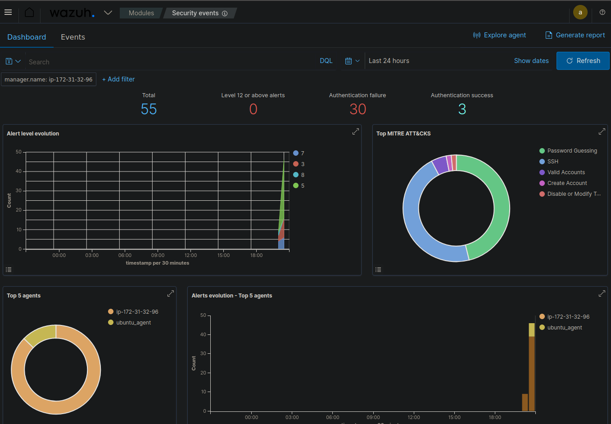
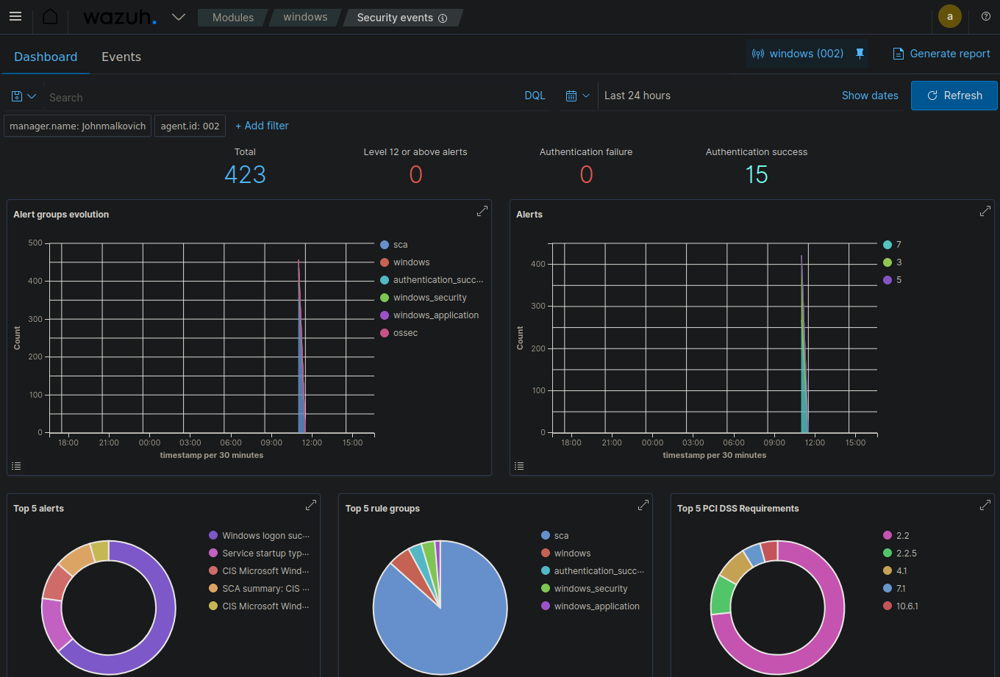
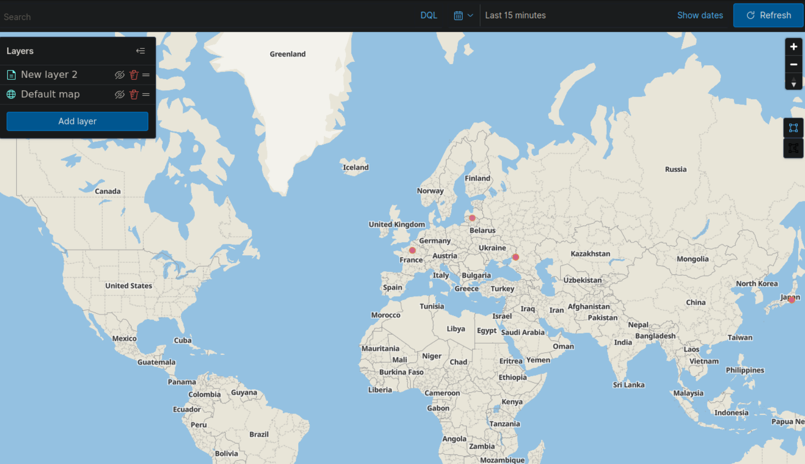
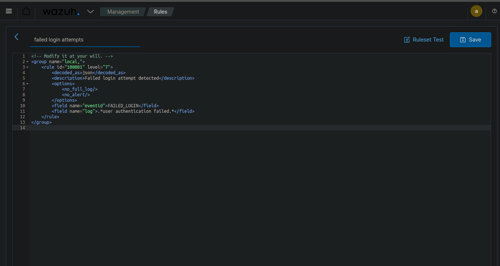

Implementation Wazuh SIEM
Wazuh is an open-source security platform that integrates SIEM (Security Information and Event Management) and XDR (Extended Detection and Response) for endpoints and cloud workloads. This document provides a practical guide for deploying Wazuh on an AWS EC2 instance, including installation steps, configuring network-based intrusion detection, and creating dashboards and alerting systems.
Installation in EC2
EC2 (Elastic Compute Cloud) is a cloud computing platform by Amazon Web Services (AWS) that provides scalable and secure virtual servers.
-
Open the EC2 Dashboard:
- Select a name for the instance.
- Choose an operating system (e.g., Ubuntu for installing Wazuh server).
-
Choose an Instance Type:
- Instance types vary from low to high computing, memory, and networking needs. For Wazuh server, the requirements depend on the number of endpoint agents monitored.
- A minimum for a single agent is 2 CPUs and 4GB RAM. The t3.medium instance type is typically sufficient.

-
Create a Key Pair and Security Group:
- Create a key pair for secure access (.pem file for Linux).
- Optionally, create a security group (instance firewall) or skip this step for now.
-
Select Storage:
- Choose the gp2 (SSD) storage type.
- 50GB is generally enough for testing, depending on the number of endpoint servers and traffic.
-
Launch the Instance:
- Wait 3-4 minutes for the instance to start.
- Perform a status check and connect using instance connect or SSH via terminal:
ssh -i keypair.pem ubuntu@172.31.32.96
-
Install Wazuh:
- Follow the step-by-step installation guide at Wazuh Documentation or use quick installation:
curl -sO https://packages.wazuh.com/4.7/wazuh-install.sh && sudo bash ./wazuh-install.sh -a
Installed packages include:
- gawk: A Wazuh dependency for pattern matching in text.
- Wazuh Indexer: An analytical tool for querying and storing log data as JSON files.
- Filebeat: Ships log data from the agent server to the indexer.
- Wazuh Dashboard: Provides a web UI for analyzing and visualizing security events and alerts.
-
Access the Wazuh Web Portal:
- Update the security groups to open port 443 for the Wazuh web portal.
- Open the web portal via browser using the EC2 instance IP address and port 443. Input the credentials provided during installation.  
-
Add Agent:
- Name the agent server, select the OS, and input the server IP for connecting with the server. 
- Copy the installation link and execute it on the agent server.
- Update the security group to allow the agent server's public IP to access the server and send logs. 
-
Start the Wazuh agent:
For Linux:
systemctl daemon-reload systemctl enable wazuh-agent systemctl start wazuh-agentFor Windows (in PowerShell):
NET START wazuh
Integrating Network based intrusion detection with suricata
-
Install suricata:
sudo add-apt-repository ppa:oisf/suricata-stable sudo apt-get update sudo apt-get install suricata -y -
Apply rulesets:
cd /tmp/ && curl -LO https://rules.emergingthreats.net/open/suricata-6.0.8/emerging.rules.tar.gz sudo tar -xvzf emerging.rules.tar.gz && sudo mv rules/*.rules /etc/suricata/rules/ sudo chmod 640 /etc/suricata/rules/*.rules -
Navigate to /etc/suricata/suricata.yml to configure and enter the network interface in yml
-
Start suricata:
systemctl start suricata -
Edit ossec.conf in wazuh agent machine to collect suricata logs from /var/log/suricata/eve.json
-
Navigate to /var/ossec/etc/ossec.conf add this:
<ossec_config> <localfile> <log_format>json</log_format> <location>/var/log/suricata/eve.json</location> </localfile> </ossec_config> -
To filter network level events using suricata use rule.groups:suricata ruleset in field to filter out suricata alerts.
Dashboards and Visualization
Security Event Dashboard
The Security Event Dashboard provides an overview of security events across your infrastructure. It typically includes event count over time, top alert categories, severity distribution, geographic distribution of events, and top affected assets.
Ubuntu Dashboard :  Windows event dashboard : HIPAA Compliance Dashboard
The HIPAA Compliance Dashboard helps track adherence to HIPAA requirements, including access control monitoring, audit logging, data encryption status, and integrity monitoring alerts.
HIPAA Compliance Requirements : HIPAA Compliance Dashboard :
HIPAA Compliance Dashboard :

Security Configuration Assessment
This dashboard provides an overall compliance score, failed checks by category, recommendations for improving security posture, and trend analysis of compliance over time.

Security event description
Trojan alert : Failed login attempts :
Failed login attempts :

MITRE ATT&CK Dashboard
The MITRE ATT&CK Dashboard maps detected activities to the MITRE ATT&CK framework, showing tactics and techniques observed, frequency of each technique, affected assets per technique, and timeline of detected ATT&CK patterns.
MITRE Dashboard : MITRE Events :
MITRE Events :

Creating custom dashboards
Geo-location Pinning of Attacks
- Click on create visualization and select maps as a layer one.
- In right side hamburger menu and select data source as wazuh-alerts-* and field as geo-location.
- Select Data Source Select Field.
- We can also select styles and other customizations and then update as layer 2.

This is the Geo-location pinning of all login attempts:
Failed Authentication Attempts Dashboard
- Choose "Data Table" as the visualization type.
- Set the data source to "wazuh-alerts-*".
- Add a filter: rule.groups: authentication AND rule.level: >=5
- Under "Buckets", add: Split rows: agent.name (for source)
- Split rows: rule.description (for event details)
- Under "Metrics", add: Count of events
- Save and add to your dashboard.
Threat Intelligence Integration
-
Edit /var/ossec/etc/ossec.conf on the Wazuh manager:
<ossec_config> <integration> <name>custom-ti</name> <hook_url>http://your-ti-feed-url</hook_url> <level>3</level> <alert_format>json</alert_format> </integration> </ossec_config> - Create a custom Python script in /var/ossec/integrations/custom-ti.py to parse the feed and generate Wazuh alerts.
- Restart Wazuh:
systemctl restart wazuh-manager
Creating alert system
-
Set Up Alerts:
- Use Opensearch to create an alerting system.
- Create a monitor and specify a data source.
-
Configure Monitor:
- Select the monitor type, monitor frequency and provide a rule or condition for monitoring.
- Add scripts for elaborate conditions and alerts.
Example script:
int score = 0; for (int i = 0; i < ctx.results[0].hits.hits.length; i++) { // Weighs 500 errors 10 times as heavily as 503 errors if (ctx.results[0].hits.hits[i]._source.http_status_code == "500") { score += 10; } else if (ctx.results[0].hits.hits[i]._source.http_status_code == "503") { score += 1; } } if (score > 99) { return true; } else { return false; } //This script assigns score to http status codes, here 500 error is given score 10 and 503 code is given score 1. so the score keeps on adding as new connection attempts are made until it hits 100 and the trigger will set off.3. Configuring Email Alerts
-
Enable Email Notifications:
- Navigate to /etc/ossec/etc/ossec.conf
- Add the following configuration to the .conf file:
<ossec_config> <global> <email_notification>yes</email_notification> <email_to>me@test.com</email_to> <smtp_server>mail.test.com</smtp_server> <email_from>wazuh@test.com</email_from> -
Verify Email Settings:
- Check the email settings in the Wazuh dashboard.
- Ensure all fields are correctly populated.
After configuration, you will receive security event alerts through email. You can also adjust the number of alerts received per hour in the settings.
4. Creating New Ruleset
-
Access Rule Management:
- Navigate to the Management section in the Wazuh dashboard.
- Select "Rules" from the available options.

-
Define New Rule:
- Write a simple XML code to define the rule and name the ruleset.
- Example: Create a rule for failed login attempts.
Example XML code:
<rule id="100001" level="5"> <description>Failed login attempt</description> <match>failed login|authentication failure</match> <group>authentication_failed,</group> </rule>This example code creates a rule with ID 100001 that detects failed login attempts. It can be used as a ruleset for creating dashboards or other alert systems.
-
Test the Ruleset:
- Use the Wazuh testing tool to verify the rule's functionality.
- Simulate events to ensure the rule triggers appropriately.

CONCLUSION
Wazuh's open-source platform is flexible and cost-effective, allowing us to scale and customize as needed. Continuous updates and strong community support ensure we stay ahead of emerging threats. Implementing Wazuh is a strategic move to strengthen our overall security posture and effectively protect our digital assets. Wazuh offers real-time event monitoring, detailed log analysis, and proactive threat detection. By integrating with Suricata, we bolster our network-based intrusion detection, and the custom dashboards and alerting systems provide clear, actionable insights.